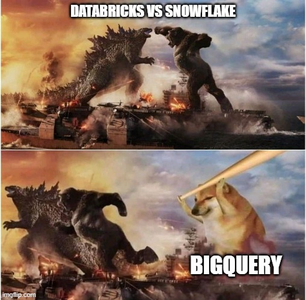
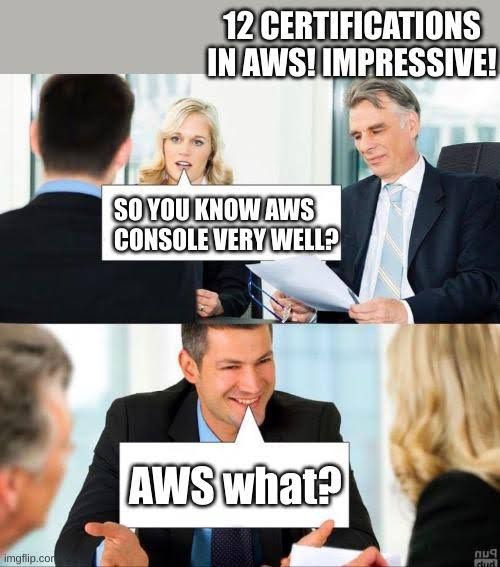
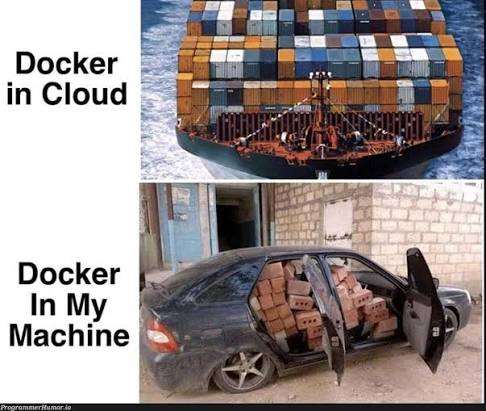
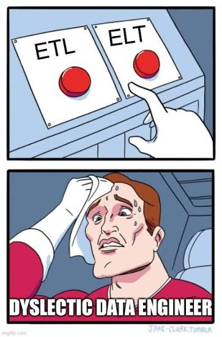
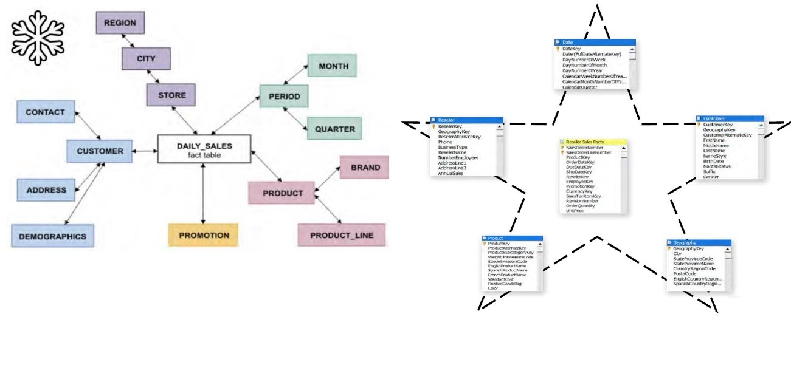

Almacenes de Datos y BigQuery
2026-08-24
El objetivo de esta práctica es que el alumno aplique los conceptos de modelado dimensional (hechos, dimensiones, granularidad y jerarquías) mediante el diseño e implementación de un Data Warehouse en la plataforma Google BigQuery.

On-premise: Servidores físicos de la propia empresa. Implica altos costos iniciales, requiere un equipo experto para gestionarlo y una planificación rigurosa para crecer con la demanda, debido a la rigidez al escalar recursos en centros de datos tradicionales.
Nube: gestionada y alojada por un proveedor de servicios cloud, como Google BigQuery, Amazon Redshift o Snowflake.


Ventajas
Desventajas
Ventajas
Desventajas
Cuando BigQuery ejecuta una consulta, el motor distribuye el trabajo en paralelo, escanea las tablas relevantes en almacenamiento, combina los resultados y devuelve el conjunto final de datos.
Para hacer esta transición existen dos metodologías clásicas de modelado, que difieren en el orden en que se construye el warehouse y en el nivel de normalización del modelo final: la de Ralph Kimball y la de Bill Inmon.
Ralph Kimball — Enfoque “Bottom-Up”
Se construyen primero data marts dimensionales por proceso de negocio, modelados como esquemas estrella o copo de nieve. El Data Warehouse general emerge de la unión de estos data marts mediante un bus de dimensiones conformadas.
Bill Inmon — Enfoque “Top-Down”
Se construye primero un Data Warehouse corporativo único que integra los datos de toda la organización. A partir de él se derivan data marts departamentales para consumo analítico.
| Criterio | Kimball | Inmon |
|---|---|---|
| Enfoque | Bottom-Up (de los data marts al DW) | Top-Down (del DW a los data marts) |
| Modelo de datos | Dimensional (estrella / copo de nieve) | Relacional normalizado (3FN) |
| Tiempo de implementación | Más rápido, entregas incrementales | Más lento, requiere visión global primero |
| Redundancia de datos | Mayor (desnormalizado) | Menor (normalizado) |
| Consultas analíticas | Más simples y rápidas | Requieren más JOINs |
| Ideal para | Proyectos ágiles, por departamento | Organizaciones grandes, gobierno de datos estricto |
Aunque ambas metodologías son válidas, en la práctica Kimball predomina sobre Inmon en la mayoría de los proyectos actuales, por razones directamente ligadas a la tabla anterior:
Por estas razones, en esta práctica se utiliza el enfoque de Kimball: se modela un único proceso de negocio (ventas) directamente como esquema estrella y copo de nieve, sin necesidad de construir primero un Data Warehouse corporativo normalizado.
Paso 1 · Seleccionar el proceso de negocio
Elegir el proceso operativo que se quiere analizar. Suele corresponder a una tabla transaccional central de la base relacional.
Paso 2 · Declarar la granularidad
Definir qué representa cada renglón de la tabla de hechos. Toda decisión posterior depende de este nivel de detalle.
Paso 3 · Identificar las dimensiones
Detectar el contexto que describe al hecho: quién, qué, cuándo, dónde. Suelen salir de las tablas “maestras” o de catálogo de la base relacional.
Paso 4 · Identificar los hechos
Detectar las métricas numéricas y aditivas del proceso.

ETL — Extract, Transform, Load
Los datos se extraen de la fuente, se transforman en un servidor intermedio (limpieza, desnormalización, cálculo de métricas, generación de claves sustitutas) y después se cargan ya listos en el Data Warehouse.
ELT — Extract, Load, Transform
Los datos se extraen de la fuente y se cargan crudos directamente en el Data Warehouse. La transformación ocurre después, dentro del propio motor del warehouse, usando su poder de cómputo (SQL, dbt, BigQuery ML, etc.).
| Criterio | ETL | ELT |
|---|---|---|
| Orden del proceso | Extraer → Transformar → Cargar | Extraer → Cargar → Transformar |
| Dónde se transforma | Servidor/motor intermedio dedicado | Dentro del propio Data Warehouse |
| Velocidad de carga | Más lenta (espera la transformación) | Más rápida (carga datos crudos de inmediato) |
| Escalabilidad de la transformación | Limitada por el servidor ETL | Aprovecha el cómputo elástico de la nube |
| Datos crudos disponibles | No siempre se conservan | Sí, siempre quedan en el warehouse |
| Flexibilidad de análisis | Baja | Alta |
| Infraestructura necesaria | Servidor ETL adicional | Solo el Data Warehouse + herramienta de transformación |
1. Cómputo elástico en la nube Motores como BigQuery o Snowflake procesan volúmenes masivos en segundos.
2. Almacenamiento ultra barato Guardar todo el historial de datos crudos cuesta centavos.
3. Preservación del dato crudo Permite re-procesar o auditar la información sin perder nada.
4. Flexibilidad para Big Data Soporta datos no estructurados (JSON, logs, eventos) sin esquemas previos.
5. Ecosistema moderno (SQL + dbt) Transforma directamente en el warehouse usando solo SQL versionado y modular.
1. Crear tabla de hechos (fact_*) Define la granularidad del proceso. Guarda únicamente métricas numéricas y llaves foráneas.
2. Desnormalizar dimensiones (dim_*) Aplane la información en una sola tabla por contexto (ej. producto + categoría + departamento).
Paso 3 · Generar claves sustitutas Crea llaves sintéticas (surrogate keys) en las dimensiones y vincúlalas a la tabla de hechos.
Paso 4 · Un solo nivel de JOIN Conecta fact_* directamente con cada dim_* para lograr consultas simples y ultrarrápidas.
Paso 1 · Mantener tabla de hechos (fact_*) Se conserva el mismo diseño base del esquema estrella.
Paso 2 · Normalizar dimensiones Divide en subdimensiones según sus niveles jerárquicos (ej. producto → categoría → departamento).
Paso 3 · Enlazar subdimensiones Vincula cada nivel con la siguiente subdimensión usando claves sustitutas en cadena.
Paso 4 · Resultado final Reduce la redundancia de datos a costa de consultas con más JOINs y mayor complejidad.
| Criterio | Estrella | Copo de Nieve |
|---|---|---|
| Normalización de dimensiones | Ninguna (desnormalizado) | Parcial/total (normalizado) |
| Complejidad de las consultas | Baja (pocos JOINs) |
Mayor (JOINs encadenados) |
| Rendimiento de lectura | Generalmente más rápido | Puede ser más lento |
| Espacio en disco | Mayor (redundancia) | Menor (sin redundancia) |
| Mantenimiento de jerarquías | Más difícil | Más fácil |

Para esta práctica se ha seleccionado el dataset público bigquery-public-data.thelook_ecommerce.
Se debe de modelar de forma natural un proceso de negocio transaccional, a partir del cual se pueden derivar tanto la tabla de hechos como sus dimensiones.
dw_estrella y dw_copo_nieve.(Sustituir id_proyecto por el ID real del proyecto de GCP del alumno.)
Entender la estructura de las tablas fuente y definir cuál será el hecho de negocio, su granularidad y sus métricas.
| Elemento | Definición |
|---|---|
| Granularidad | Un renglón por cada producto vendido dentro de un pedido (order_items.id) |
| Métricas (hechos) | sale_price (precio de venta), cost (costo del producto), ganancia (precio − costo) |
| Dimensiones | Cliente, Producto, Tiempo, Centro de Distribución |
Qué se debe hacer: dibujar el diagrama conceptual de cada esquema antes de programarlos.
fact_ventas rodeada de dim_cliente, dim_producto, dim_tiempo y dim_centro_distribucion, todas desnormalizadas (un solo nivel)fact_ventas, pero con dim_producto descompuesta en dim_categoria y dim_departamento, y dim_cliente descompuesta en dim_ciudad, dim_estado y dim_paisSe deben ejecutar las siguientes consultas:
Para las consultas sobre el esquema dw_copo_nieve se requerirá encadenar JOINs adicionales, por ejemplo:
dim_producto → dim_categoria para obtener el nombre de la categoríadim_cliente → dim_ciudad → dim_estado → dim_pais para obtener el paísPráctica 2 · Google BigQuery